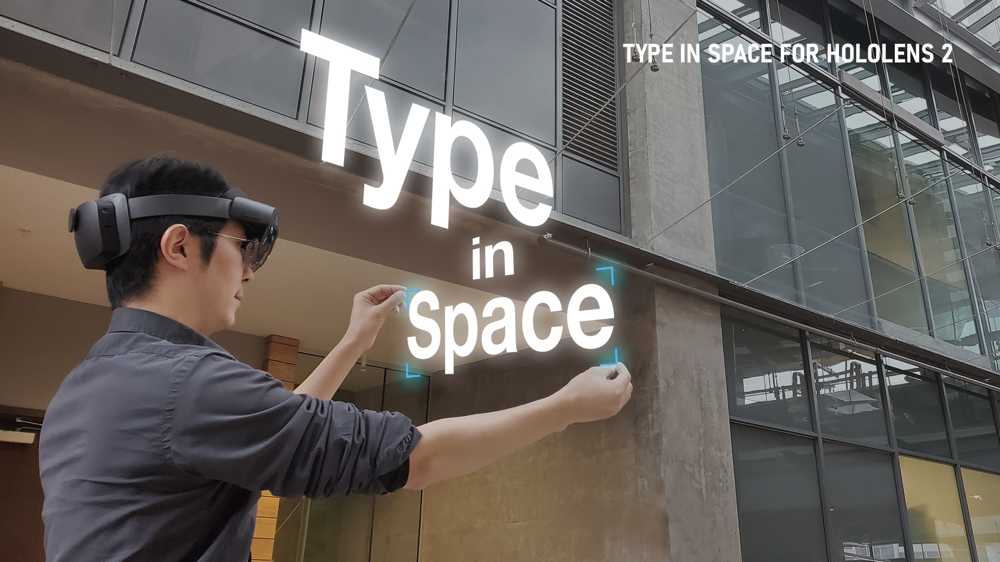
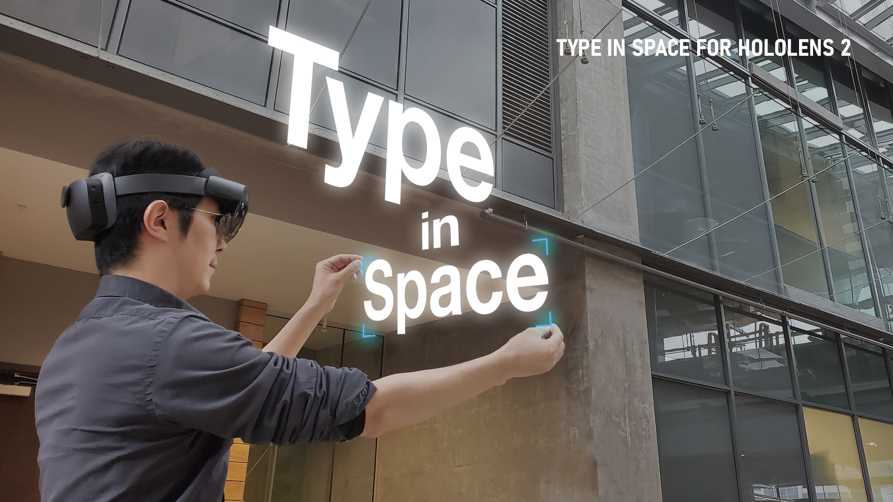

codewords SKO 2024
michelle hoang
codewords SKO 2024
michelle hoang
During this week we started off with a discussion about how typography is integrated within AR spaces through discussing the works of Barbara Kruger and Dong Yoon Park. A work from Barbara Kruger that we explored called “Venice Biennale (2022)”, showcased a physical installation of typography applied on the walls and floors of a space, allowing viewers to be completely overwhelmed and surrounded by words. On the other hand, “Type in Space For HoloLens 2 (2019)” by Dong Yoon Park offered a virtual space where users could manipulate and arrange typography within physical environments, essentially mixing digital type with reality. From these two case studies we were able to examine how typography can be blended within physical and digital spaces.
 

We then started another activity in small groups where we focused on the importance of sound and how we might integrate this medium to elevate the experience of a webpage. We collected some examples of websites that utilised SFX, looping music, ambient and generative sounds. By doing this I was able to explore how diverse sounds can be when utilised on a webpage.

Session two of the class provided an introduction on the code “loadSound” where we learnt how to input audio and apply a range of actions to manipulate it. I was able to learn how to code functions to switch the audio off and on, change the speed and the pitch. By learning this I am able to consider how my project could incorporate sound to elevate a sensory experience for the user and effectively demonstrate the message I want to communicate.
Useful sound resources:
Within this week I also started coding my project on p5.js, creating and importing fonts for the main text shown on the webpage as well as learning how to code the moving sphere elements. I initially created the spheres with Adobe Illustrator using the spiral tool but realised the spirals lines didn’t turn out how I envisioned so then I just used the polar grid tool which created rings of lines within a circle.

Font used: Neue Haas Grotesk (Helvetica)
The tutorial I followed: p5.js Coding Tutorial | Bouncing Ball by Patt Vira